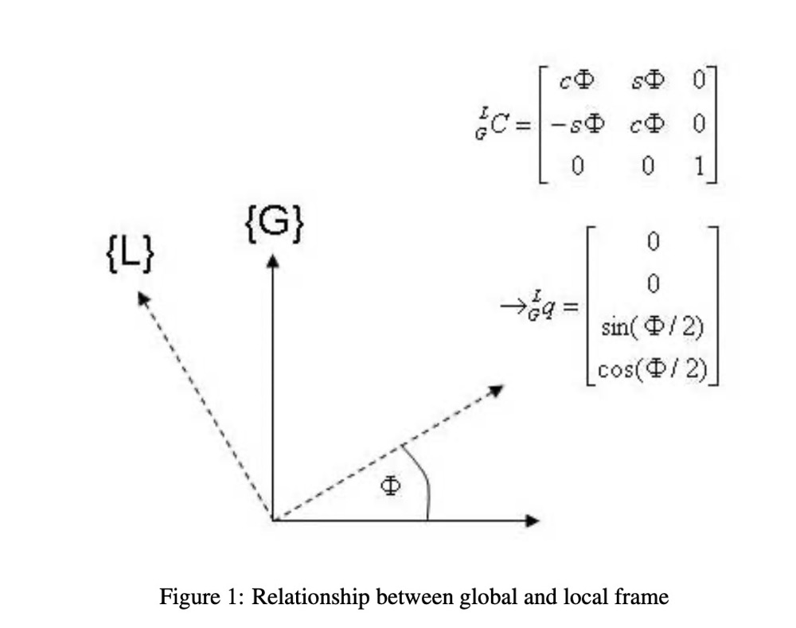

设 V 是实数域 R 上的有限维向量空间，⊗ 是 V 上的一个满足结合律的双线性二元 (乘法) 运算 ，
⊗:V×V→V
则 ⊗ 使得 V 成为一个结合代数。
V 作为一个结合代数可以 诱导一个李代数，其李括号
[,]c:V×V→V
定义为结合代数 V 上的 commutator，即
[w,v]c=wv−vw （为了符号上的简洁，这里把 w⊗v 简写为了 wv）
拓展： Universal enveloping algebra of a Lie algebra, 所有李代数都有一个（含乘法单位元且支持结合律的）泛包络代数。李代数的表示 理论可以理解为其泛包络代数的表示理论。
如果 V 上存在乘法单位元 e，V×⊂V 是所有可逆元（存在乘法逆元的元素）组成的子集，称为 V 的 单位群（the group of units）。可以证明 V× 是 V 的开集。
另外从微分几何的角度，
- V 作为 R 上的有限维向量空间，可以获得一个自然的微分结构（微分同胚于 RdimV）；
- ⊗ 是双线性映射，不难证明也是可微的；
所以 V× 是一个李群（群单位元、群乘法、逆运算都继承自代数V），且其李代数正是前述由结合代数 V 诱导的李代数。
具体可以看我在 stackexchange 上 po 的一个问题，完整证明我更新到这个提问的后面了：
https://math.stackexchange.com/questions/4563410/the-lie-algebra-of-a-lie-group-embedded-in-a-vector-space-which-is-a-unitary-ass
包含于 V× 中的、对乘法和求逆运算封闭的正规子流形，也都是一个（子）李群。
Actually all the invertible elements of V form a maximal Lie group V× (i.e. the group of units) whose Lie algebra is exactly the one on V with the commutator as its bracket. Every Lie group embedded in V is just a subgroup of the maximal.
Proof
V× is a group : trivial
V× is an open set of V (thus a manifold and a Lie group):
For any g∈V, λg:h↦gh is a linear operator on V. We first show that g is an invertible element iff λg is invertible as a linear operator.
If g is invertible, λg is surjective since for any h∈V, we have λg(g−1h)=gg−1h=h; it's injective since
the kernel of λg contains a single element 0 (λg(h)=0⇒g−1λg(h)=g−10=0⇒h=0). So λg is bijective and as a linear operator it's invertible.
If λg is invertible, then it's surjective so there exists h such that λg(h)=1, but such h is exactly the inverse of g.
Then we construct a map (det∘λ):V→R, where λ:g↦λg is from V to L(V,V) (the space of linear operators from V to itself). Note L(V,V) itself is a vector space and the map λ is linear, thus continuous. To show λ is linear, choose a basis {e1,e2,...en} for V, then λ(g) is just a linear combination of {λ(e1),λ(e2),...λ(en)} for any g∈V.
So now we know the combined map (det∘λ) is continuous (with in mind that det:L(V,V)→R is continuous). It's clear that (det∘λ)(g)=0 iff λg, thus g, is invertible. So V× is open as it's the preimage of the open set R/0.
The bracket on the Lie algebra of V× is exactly the commutator
Let g be the Lie algebra of V×, and the left invariant vector field on V× induced by v∈g is denoted by ζv.
We first show ζv(g)=gv (note the Lie group V× and its Lie algebra g are both subsets of V and points from the two spaces can be multiplied directly).
By the definition of left invariant vector field we have ζv(g)=(Tλg)I(v), where (Tλg)I is the tangent map of λg at identity I. Benefit from the fact that V× is an open set of a vector space (where +/− is allowed) we can directly compute (Tλg)I(v) as below:
(Tλg)I(v)=t→0limtλg(I+vt)−λg(I)=t→0limtg(I+vt)−g=t→0limtgvt=gv
Let ζw be another left invariant vector field induced by w∈g. The value of the poisson bracket [,]p of the two vector field at I can be computed as:
[ζw,ζv]p(I)=(ζw(I))ζv−(ζv(I))ζw
where (ζw(I))ζv denotes the directional derivative of ζv at I along ζw(I), and (ζv(I))ζw the opposite. This formula makes sense since we're working on a vector space.
Choose a basis {e1,e2,...,en} for V， we have
ζw(g)=gw=(giei)w=xi(g)(eiw)
(Einstein summation convention is used here), where xi is a coordinate function and (eiw), as a vector, can be also viewed as a constant vector field. To be more compact, the vector field ζw can be written as:
ζw=(eiw)⋅xi
Similarly, ζv=(ejv)⋅xj
Thus
[ζw,ζv]p(I)=(ζw(I))ζv−(ζv(I))ζw=(w)((ejv)⋅xj)−(v)((eiw)⋅xi)=((w)xj)ejv−((v)xi)eiw
Since (w)xj=wj,(v)xi=vi, so finally we have
[w,v]g=[ζw,ζv]p(I)=wjejv−vieiw=wv−vw
The Lie group V× is maximal: trivial
Every Lie group embedded in V is a Lie subgroup of V× and its Lie algebra is a Lie subalgebra of g: trivial
令 G 是嵌入在结合代数 V 中的李群，其李代数为 g，X,Y∈g 是李代数中的向量，g∈G 是李群中的一个元素。
借助 V 的结合代数结构，g 到 G 的指数映射 exp 可以直接写成幂级数形式：
exp(X)=eX=n=0∑∞n!Xn=I+1!X+2!X2+...
注意上式中 I 代表乘法单位元（亦即 G 的单位元），而之前被我们用来表示单位元的字母 e 在上式中表示自然对数的底了。这里有点符号滥用~
而对数映射（局部）则可写为：
log(g)=n=1∑∞n(−1)n−1(g−I)n=h−2h2+3h3−...(h:=g−I)
此外，Ad 和 ad 也可计算如下：
AdgX=t→0limtlog[g⋅exp(Xt)⋅g−1]=t→0limtlog[I+g⋅Xt⋅g−1]=t→0limtg⋅Xt⋅g−1=g⋅X⋅g−1
adYX=s→0limsAdexp(Ys)X=s→0limsexp(Ys)⋅X⋅exp(−Ys)=s→0lims(I+Ys)⋅X⋅(I−Ys)=YX−XY=[Y,X]
adYX=[Y,X] 对于一般的李群也是成立的。对于嵌入在结合代数中的李群我们更容易得到这个结论.
配以矩阵乘积，所有 n×n 矩阵组成一个结合代数 V=L(n)，其单位群（所有可逆矩阵组成的一般线性群） GL(n) 是一个李群，其李代数为 V 本身， gl(n)=L(n)。
矩阵的指数 exp 、对数 log 运算比较常规，不再多说。我们来看下李代数 gl(n) 上的 Adg 和 adY 算子。
Adg 和 adY 都是向量空间 gl(n)
上的线性变换，为 gl(n) 选择一组基后，它们都可对应一个矩阵。
以 Adg 为例，我们能否找到一个矩阵 Mg，使得对于 X∈gl(n)， Adg(X)=Mg⋅X？
看似可以，但实际上还做不到。问题出在 X∈gl(n) 本身就已经是个矩阵，而不是一个列向量。我们需要先把n×n的方阵 X 展开成一个 n2×1 的列向量 X∨，即把它转化为欧氏空间 Rn2 中的点，然后才能用一个 n2×n2 的矩阵 Mg 来表示 Adg： (AdgX)∨=MgX∨ 。
上面提到了 李代数 gl(n) 与等维数的欧氏空间的变换。这种变换关系对一般的李群 G 也存在。
若李群 G 的维数为 d，g 为其李代数，为 g 选择一组标准基后，他就可以自然同构于 Rd。令 ∧:Rd→g 为所选择的同构，其逆为 ∨:g→Rd。
若 ϕ∈Rd，则 Φ=ϕ∧∈g；
若 Φ∈g，则 ϕ=Φ∨∈Rd;
令 Adg∨(ϕ):=Adg(ϕ∧)∨，adX∨(ϕ):=adX(ϕ∧)∨，这样 Adg∨ 和 adX∨ 都是 Rd 上的线性算子，它们都可等价为一个 d×d 的矩阵。
实际使用中在不引起歧义的情况下我们可能经常作些符号复用（滥用），把 Ad∨,ad∨ 也直接写作 Ad,ad。但要知道它们实际是有区别的，它们作用的线性空间不一样，分别是 Rd 和 g。
类似地，还有 exp∨:Rn→G 和 log∨:G→Rn。符号滥用时可以省略它们的上标。
GL(n) 有些常见的子群，比如对于 3 维的情况，我们经常会遇到 O(3),SO(3)⊂GL(3)，以及 SE(3),Sim(3)⊂GL(4) 等。其中 SO(3) 算是最常用到的矩阵群了。
SO(3) 有三个自由度，其李代数是 3 维的；实际上 SO(3) 的李代数 so(3) 是所有 3×3 的反对称矩阵组成的线性空间。李括号由矩阵乘积的 commutator 定义。
由于 so(3) 是3维的，且矩阵空间存在标准基，因此 so(3) 可自然同构于 R3。于是我们也可以认为 SO(3) 的李代数是 R3，此时李括号正好对应 3 维向量的叉积 ×。
so(3) 上的李括号是矩阵乘积的 commutator，与之对应的 R3 上的李括号则正好对应向量叉积 ×，证明如下：
设 X,Y∈R3 ，那么[X,Y]:=[X∧,Y∧]∨；
令 [X,Y]=Z，那么Z∧=[X∧,Y∧]=X∧Y∧−Y∧X∧；
Z×X=Z∧X=X∧Y∧X=X×(Y×X)=(X×Y)×X，
同理得 Z×Y=(X×Y)×Y，
注意 Z×X=(X×Y)×X 把 Z 约束在了一条过X×Y、且平行于 X 的直线上，而 Z×Y=(X×Y)×Y 则把 Z 限制在过X×Y、且平行于 Y 的直线上，这两条直线只有唯一的交点 X×Y，所以 Z=X×Y。
因此 [X,Y]=X×Y=X∧Y=adXY，adX=X∧.
令 R∈SO(3) 代表一个3D旋转。
首先，注意到对于任意 p,q∈R3，有 p×q=p∧q；
然后利用向量叉积和旋转的交换性： R(p×q)=(Rp)×(Rq)，可以依次得到
Rp∧q=(Rp)∧Rq
Rp∧=(Rp)∧R
Rp∧R−1=(Rp)∧
而依 AdR 和 AdR∨ 的定义，有
AdR∨(p)=(AdR(p∧))∨=(Rp∧R−1)∨=((Rp)∧)∨=Rp。
所以，AdR∨=R，符号滥用下就可以直接写作 AdR=R.
配以四元数直乘运算后，R4 成为一个结合代数，其单位群 R4/0 是一个李群。
但一般我们只会用到单位四元数： 所有单位四元数组成的子流形 S3⊂R4/0 包含四元数单位元 (1,0,0,0) 且对直乘运算和求逆运算封闭，因此也是一个李子群。
S3 在单位元 (1,0,0,0) 处的切空间 s3，自然等同于 R4 的后三个维度张成的 3 维子空间（实部分量为0），且其上的李括号为
[w,v]=wv−vw=2(w×v)
wv 代表 w,v 的四元数积，w×v 代表它们的向量叉积 。注意，上式中为了符号上的简洁，实部为 0 的四元数 (0,vx,vy,vz) 和三维向量 (vx,vy,vz) 我们都用同一个字母 v 表示了，w 也是如此。
so(3) 等同到 R3 后，其李括号对应 R3 中的向量叉积 ×；而单位算元的李代数等同到 R3 后，其李括号对应 R3 中的 2倍向量叉积 ×，二者差了个系数2.
根据四元数的性质，如果一个旋转对应的轴角向量为 p（∣p∣ 代表转角大小），那它对应的李代数上的向量则 p/2。令 p,q为两个轴角向量，它们对应的李代数上的向量的李括号积为 [p/2,q/2]=(p×q)/2，这保持了李代数向量与轴角向量的1:2关系。
令 w∈s3≡R3，那么
exp(w)=I+w+w2/2+...
如果一个旋转的轴角向量为 p（∣p∣ 代表转角大小），那它对应的李代数上的向量 p/2，当它是小量时，一阶近似为
exp(p/2)=I+p/2+...
类似地，如果 q∈S3 靠近单位元，对数映射的一阶近似为：
log(q)=(q−I)+...
即近似只取 q 的虚部 q.v≈(q−I)（向量部分），这个虚部对应李代数上的向量，它乘以 2 代表轴角向量 p ：
p≈2(q.v)
令v∈s3≡R3，
依 Ad 的定义，Adgv=gvg−1，而等号右边代表对向量 v∈R3 进行旋转，所以 Adgv=Rv，进而Adg=R。（R 为 q 对应的旋转矩阵）。
利用李括号与 ad 的关系，
adwv=[w,v]=2(w×v)=2w∧v
所以 adw=2w∧，其中 w∧ 为w 对应的 3×3 反对称矩阵。
李代数上的向量 w 对应的转轴向量为 p=2w，所以 adw=p∧.
以上关于四元数的讨论都是基于 Hamilton 规范，与之相对的是 JPL 规范。
两种规范下乘法的定义存在差异：
q1⊗Hq2=q2⊗Jq1
所以对应的李括号(commutator)也是：
[w,v]H=[v,w]L=−[w,v]L
JPL 规范下：
- 指数映射 exp(w)=I+w+w2/2!+...，由于 wn （自己乘自己）在两种乘法规范下计算结果一致，所以两种规范的指数映射结果一致；
- 同理，对数映射log(q)=(q−I)−(q−I)2/2+... 在两种规范下计算结果也一致；
- adw=−2w∧: since adwv=[w,v]J=−[w,v]H=−2(w×v)=−2w∧v;
- Adg=RJ=RHT: 这是因为JPL 规范计算的 Adgq=gpg−1 等于Hamilton规范（把乘数顺序反过来）计算的 g−1pg=RHTp ，RH 为 q 以 Hamilton 规范转化得到的旋转矩阵)
- 由于 Hamilton 规范下的 qpq−1 等于 JPL 规范下的 q−1pq，或者反过来也一样，所以 在用单位四元数表示旋转时，Hamilton 规范下的 q 等价于JPL规范下的 q−1=q∗。换言之，同样一个四元数，在Hamilton 规范和JPL规范下对应的旋转是互逆的。
下图展示了 JPL 四元数与图中所示的旋转之间的关系。JPL 规范下的 GLq (G in L) 正好对应 Hamilton 规范下的 LGq (L in G)。

是否对于任意 n，在 Rn 上都可以定义出一个乘法使其成为含幺结合代数？并不是。
关于 n 元数的详细讨论，知乎有篇帖子可以参考： https://zhuanlan.zhihu.com/p/110997893
这也是为什么只有一元数（实数）、二元数（复数）、四元数。这些 n 元数的定义也产生了对应的李群。另外数学上还存在八元数，但八元数不是结合代数，无法在 R8/0 上衍生出李群。
特别地，由于没有三元数，所以二维球面 S2 不对应于某个李群。这也是为什么二维球面作为状态空间时反而不如三维球面处理起来方便（比如，VINS初始化过程中优化重力向量时会遇到状态空间是个二维球面的情况），因为三维球面我们可以运用李群，但二维球面不可以。